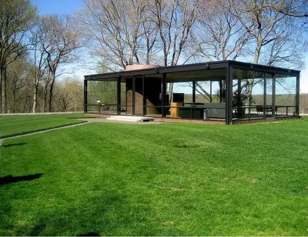

Bienvenue
Découvrez la grandeur de l'architecture moderne à travers l'œuvre de Philip Johnson dans notre exposition "JohnsonArchitecturalJourney.com".
Cette exposition, hébergée dans un cadre aussi élégant qu'inspirant, met en lumière les créations les plus emblématiques de Johnson.
L’exposition

La Glass House
Construite en 1948-1949, conçu par Philip Johnson comme sa propre résidence. On l'a appelé son « œuvre signature ».
LIRE LA SUITEPour découvrir les œuvres majeures présentes dans l’exposition, cliquez ici !
Découvrir les œuvres